Aperiodic components of EEG in Parkinson’s disease
University of New England, NSW, & Australian National University
Talk information
- This talk was written in Quarto (R Markdown/R Studio) & is available online
Background - Parkinson’s Disease
- Prevalence - approx. 150,000 in Australia
- Increasing by 4% p/a
- 40% live outside capital cities (Parkinson’s Australia)
- Diagnosis: Still difficult - current standard UPDRS-III
- Variable disease progression
- Symptoms: motor & non-motor
- Non-motor: autonomic dysfunction, neuropsychiatric (mood, cognition, behaviour, thought), sensory & sleep
- Early warning signs: Loss of smell, sleep disturbances, micrographia, facial & speech changes
- Early diagnosis - sway, finger tapping, EEG
Our study
New England region cohort - data collected at 3 time points in Hunter/New England/Tamworth region (2022-2023 - T1 data used here)
Canberra cohort - data collected at The Canberra Hospital (2016-2017)
EEG (resting state, Go-NoGo), postural sway, finger tapping, MoCA, NUCOG, MDS-UPDRS-III, mood (depression, anxiety), demographics

EEG - Aperiodic and periodic components
Traditionally, EEG frequency data has been analysed in bands (delta, alpha, beta, gamma)
However, recent research has focused on separating aperiodic (baseline, 1/f slope) from periodic (frequency) components
Aperiodic components turn out to be informative - slope flattens with age, and is steeper in some conditions, including Parkinson’s disease
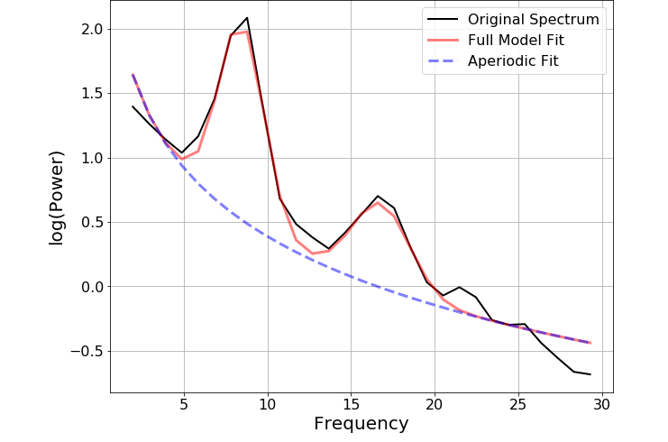
EEG - Hunter New England cohort
For this study, we looked at resting state data (90s each with eyes open and closed)
20 patients, 21 controls
EEG headset: Wearable Sensing DSI-24 - dry-electrode headset, 21 channels
Preprocessing pipeline: HAPPE toolbox for low-density arrays
Frequencies extracted in MATLAB/EEGlab
FOOOF Toolbox (Fitting One Over F) - Python (Jupyter Lab) to extract aperiodic components (slope & offset)
Results - Hunter New England cohort
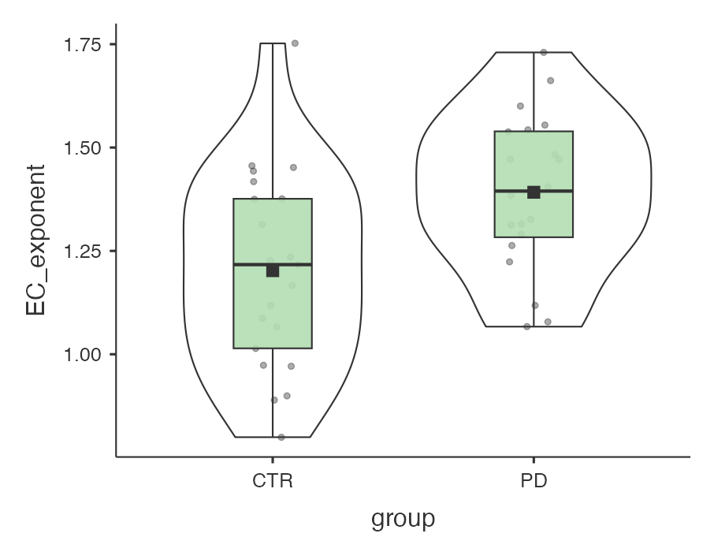 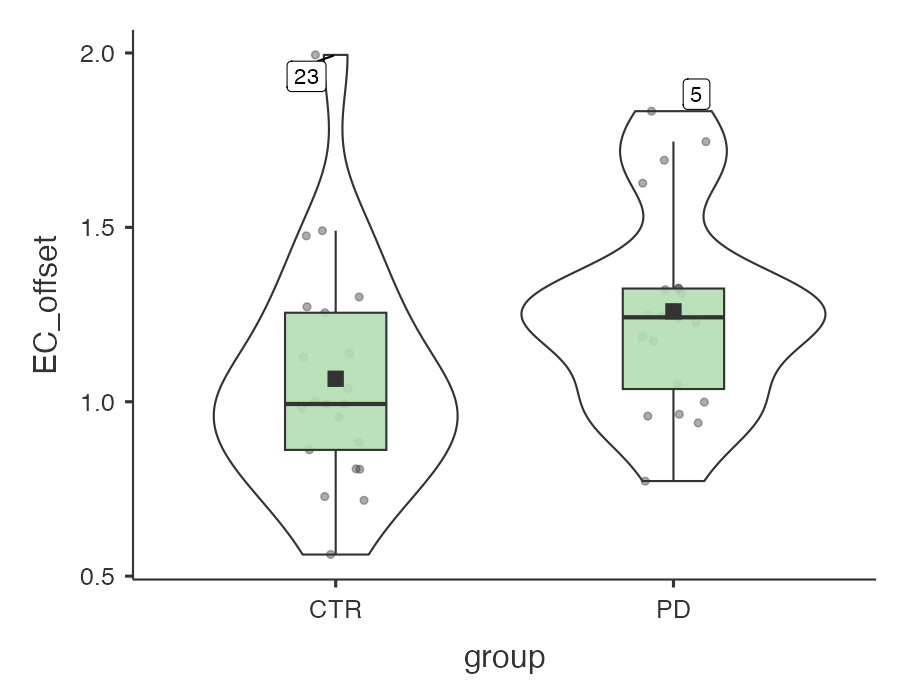
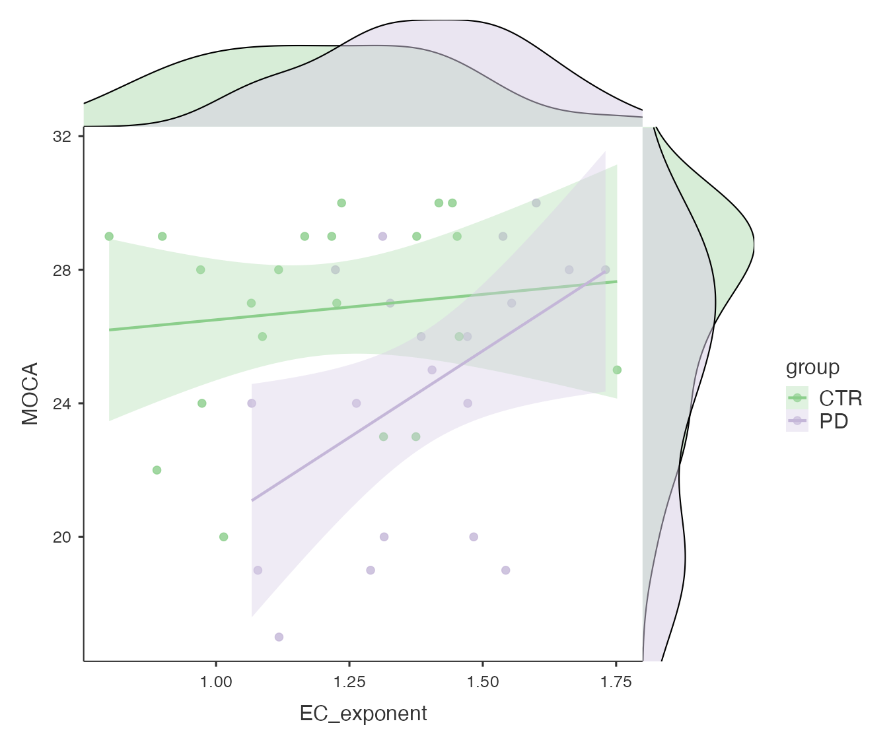
Results - HNE (patients vs. controls, EC)
| F (df) | p | \(\eta^2_P\) | |
|---|---|---|---|
| Model | 4.45 (2,37) | .018 | 0.19 |
| Group | 6.17 (1,37) | .018 | 0.14 |
| Age | 0.22 (1, 37) | .645 | 0.01 |
| F (df) | p | \(\eta^2_P\) | |
|---|---|---|---|
| Model | 2.33 (2,37) | .111 | 0.11 |
| Group | 2.62 (1,37) | .114 | 0.07 |
| Age | 0.39 (1, 37) | .536 | 0.01 |
Results - HNE (MoCA and aperiodic components, patients)
| F (df) | p | \(\eta^2_P\) | |
|---|---|---|---|
| Model | 5.62 (3,16) | .008 | 0.52 |
| Exponent | 10.72 (1,16) | .005 | 0.40 |
| Offset | 1.90 (1,16) | .187 | .11 |
| Age | 7.46 (1,16) | .015 | .32 |
But does it replicate?
The Canberra Hospital cohort
- Data collected 2016-2017
- 90s each with eyes open and eyes closed
- BioSemi Active Two system - 64 electrodes
- 21 patients, 18 controls
- Selected only matching channels to the HNE cohort, downsampled to 300Hz to match
- Same preprocessing pipeline
- Thanks to Robin Vlieger for this work
Results - Canberra cohort
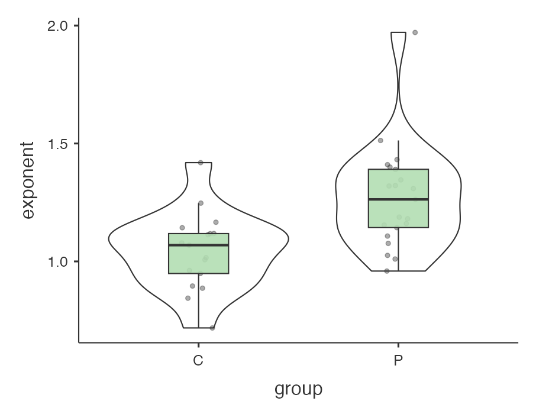 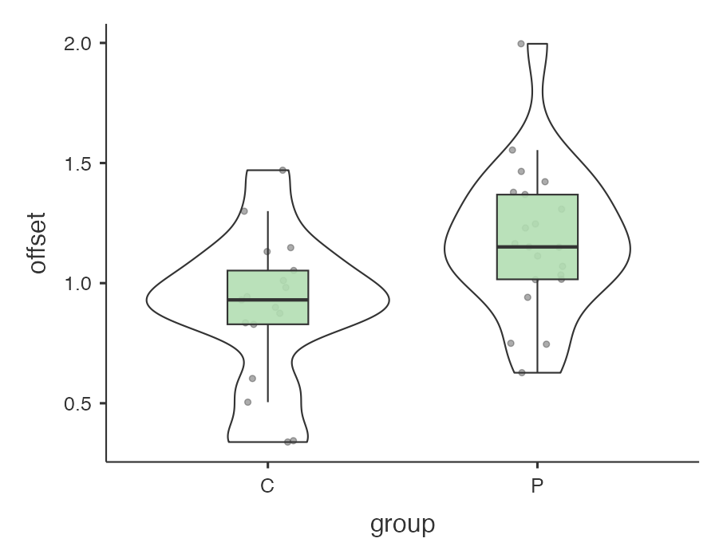
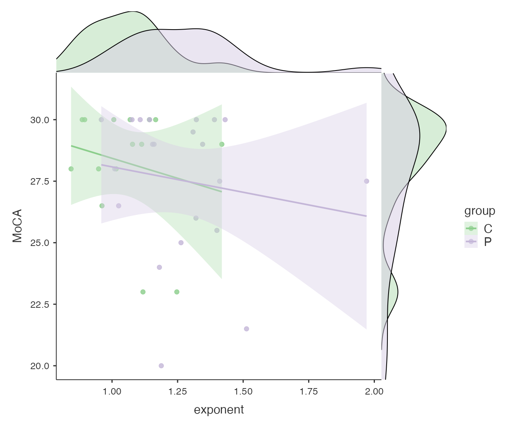
Results - Canberra cohort (patients vs. controls, EC)
| F (df) | p | \(\eta^2_P\) | |
|---|---|---|---|
| Model | 6.14 (2,35) | .005 | 0.26 |
| Group | 11.96 (1,35) | .001 | 0.25 |
| Age | 0.29 (1, 35) | .591 | 0.01 |
| F (df) | p | \(\eta^2_P\) | |
|---|---|---|---|
| Model | 5.40 (2,37) | .009 | 0.24 |
| Group | 8.31 (1,35) | .007 | 0.19 |
| Age | 0.129 (1, 35) | .129 | 0.06 |
Results - TCH (MoCA and aperiodic components, patients)
| F (df) | p | \(\eta^2_P\) | |
|---|---|---|---|
| Model | 6.73 (3,17) | .003 | 0.54 |
| Exponent | 1.42 (1,17) | .249 | 0.08 |
| Offset | 3.58 (1,17) | .076 | .17 |
| Age | 8.97 (1,16) | .008 | .35 |
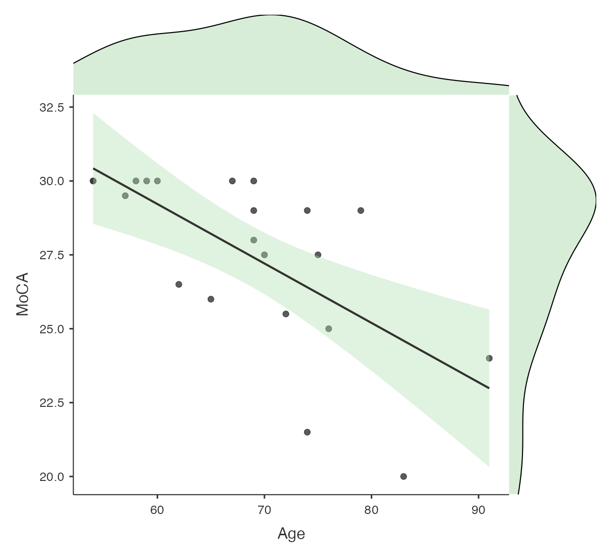
UNM and UTU cohorts
- We also looked at two publicly available open datasets from the University of New Mexico and the University of Turku
- UNM: The biggest dataset - 28 patients, 28 controls
- A very widely used dataset in ML studies - has “on” and “off” medication states for patients
- We used the “on” data to match our own datasets
- Same electrode selection, downsampling, preprocessing as previous studies
- UTU (University of Turku, Finland): 18 patients, 18 controls
- As above re electrodes, preprocessing.
- Both had MMSE rather than MoCA for cognitive functioning
UNM results
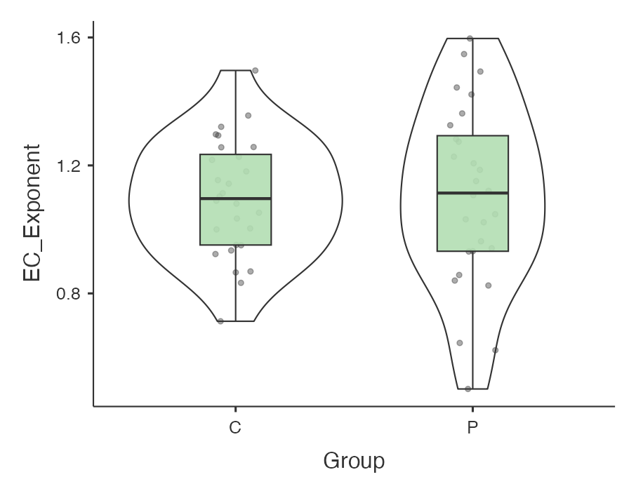 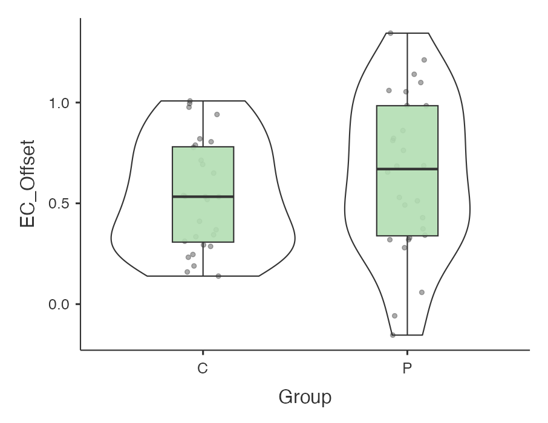
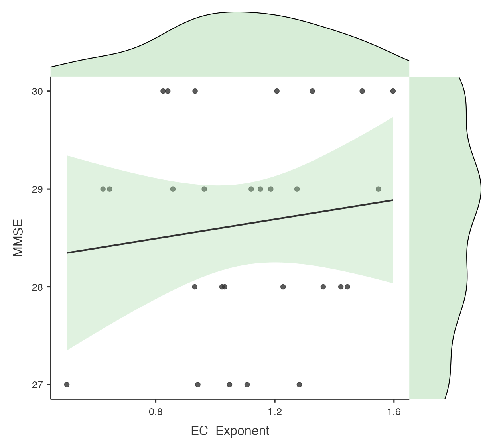
UTU results
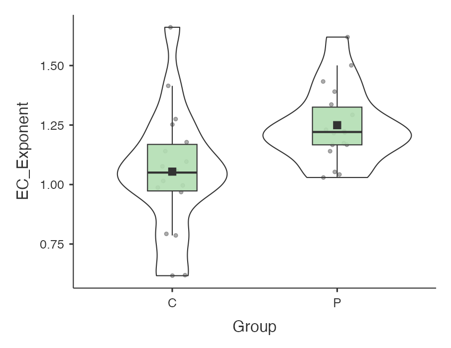 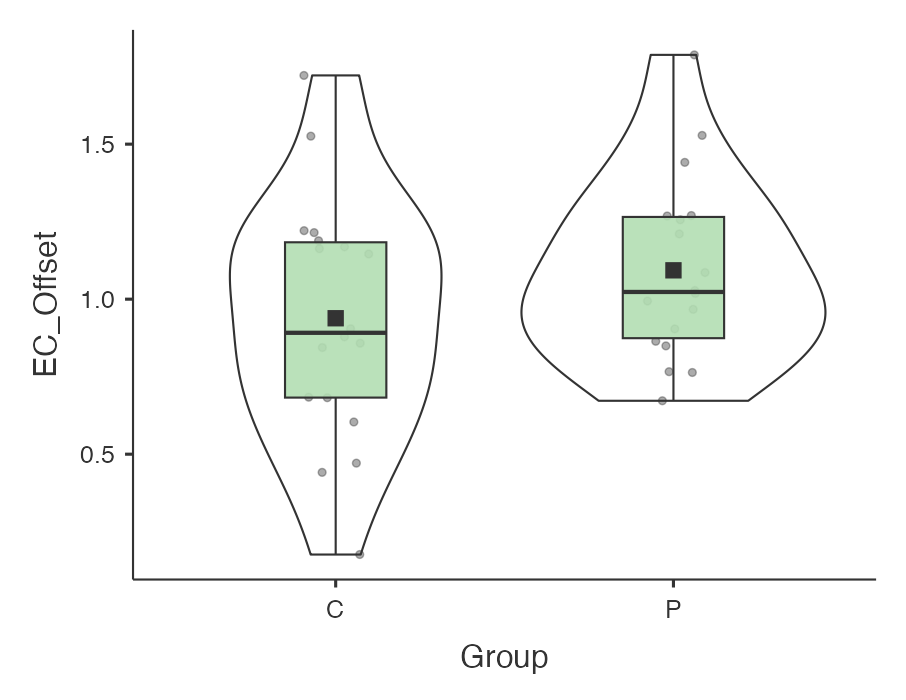
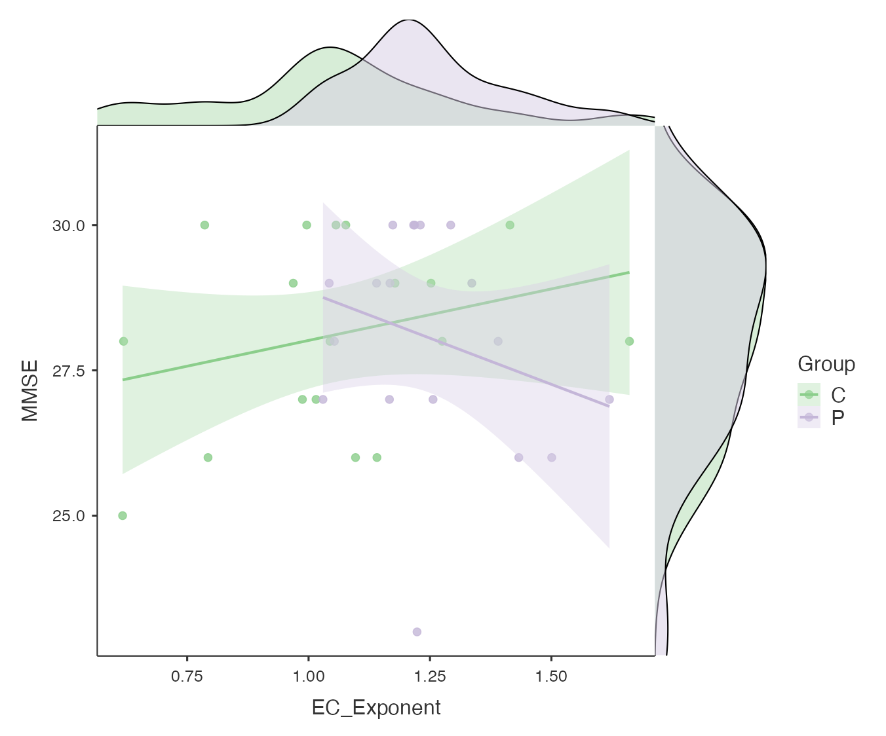
Discussion
<<<<<<< HEAD- Patients were higher than controls for exponent in 3/4 datasets (UNE, TCH, UTU)
- Patients were higher than controls for offset only in 1 dataset (TCH)
- Correlations with cognitive measures were inconsistent and mostly non-significant
- More collaboration between EEG labs is needed - this data is time-consuming to collect and patients want to know their time is spent usefully
- What do aperiodic component differences tell us? Noise? General slowing?
- Comments and questions welcome!
Questions?